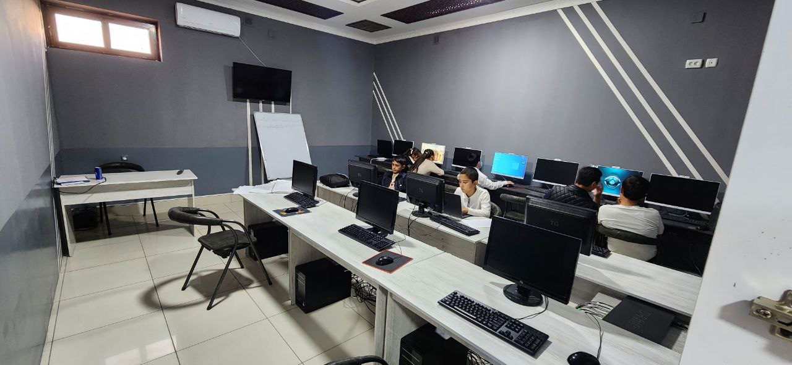
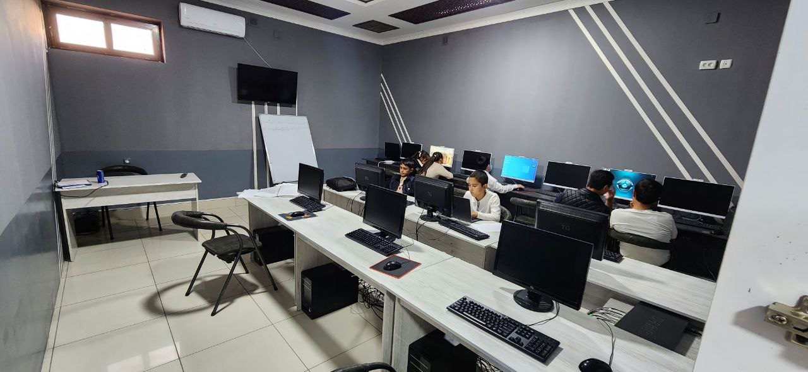

Xulosa
Men Murodullayev Javohir amaliyot davrimda o’zim uchun yanada ko’proq ko’nikmalarni qabul qildim va bilimimni
yanada oshirdim. Oquvchilar bilan muloqot qilishni va ularga o’z bilimimni qiziqarli va oson tushuntira olish muhimligini bildim.
Amaliyot davrimni Programming o‘quv markazida o‘tkazganim men uchun juda foydali va ilhomlantiruvchi bo‘ldi.
Dastlabki kunlardanoq ushbu markazdagi iliq muhit, ustozlar va o‘quvchilarning qiziqishi meni yanada mas'uliyatli bo‘lishga undadi.
Dars jarayonlarida kompyuter savodxonligi fanidan egallagan bilimlarimni o‘quvchilarga tushunarli va qiziqarli tarzda yetkazishga harakat qildim.
Bu esa nafaqat o‘quvchilarga foydali bo‘ldi, balki menga ham o‘z ustimda ishlash, bilimlarimni mustahkamlash va pedagogik ko‘nikmalarimni rivojlantirish imkonini berdi.
Programming o‘quv markazi — bu bilimga chanqoq yoshlarni zamonaviy va sifatli ta’lim bilan ta’minlaydigan jonkuyar jamoaga ega maskan.
Men bu yerda nafaqat o‘qitish tajribasiga ega bo‘ldim, balki ijobiy muhitda ishlash, jamoada muloqot qilish
va mas'uliyatni his etish kabi ko‘plab hayotiy ko‘nikmalarni ham o‘zlashtirdim.
Ushbu markazda o‘tgan har bir kunim amaliy tajriba va shaxsiy rivojlanishim uchun katta zamin bo‘ldi.
Kelajakda ham shunday bilimli va mehribon jamoa bilan ishlashni istar edim. Ushbu amaliyot mening
kasbiy yo‘nalishimda mustahkam qadam bo‘lib xizmat qildi
Kirish
- Frontend School o‘quv markazi Samarqand viloyati Kattaqo‘rg‘on tumani Payshanba shahrida joylashgan.
- Markazga Shokirov G‘iyos rahbarlik qilib kelmoqda.
- 2023-yilda o‘z faoliyatini boshlagan bo‘lib, bugungi kunda 11 nafar professional dasturchi va o‘qituvchi ishlaydi.
- Frontend yo‘nalishida HTML, CSS, JavaScript, React fanlari o‘qitiladi.
- O‘quv markazda 5 ta guruh mavjud bo‘lib, har bir guruhda 14 tadan 20 tagacha o‘quvchi tahsil oladi.
- O‘quvchilar amaliy loyihalar asosida real veb-saytlar yaratishni o‘rganadilar.
Kompiyuter injiniringi va dasturlash bo’yicha
asosiy terminlari
1.Kompiyuter arxitekturasi va apparat ta’minoti (Hardware)
-
CPU (Ceadntral Processing Unit)-Markaziy protsessor
-
GPU (Graphics Processing Unit)-Grafik processing
-
RAM (Random
-
Acces Memory)- operativ Xotira
2.Dasturiy ta’minot(Software)
• Operating System (OS) - Operatsion tizim (Windows, Linux, macOS)
• Driver – Qurilmalar uchun dasturiy ta’minot
• Firmware – Qurilmalarga o’rnatilgan maxsus dasturiy ta’minot
3.Tarmoq va Internet texnologiyalari
- IP Address (Internet Protocol Address) – Kompyuter tarmoq manzili
- MAC Address – Tarmoq qurilmasining unikal identifikatori
- DNS (Domain Name System) – Domen nomlarini IP-manzillariga bog’lovchi tizim.
- Algoritm – ma'lum bir muammoni hal qilish uchun bajariladigan qadamlardan iborat tartib.
- Dasturlash tili – kompyuterni tushunadigan va uni belgilangan vazifalarni bajarishga majbur qiladigan til (masalan, Python, Java, C++).
- Kompyuter arxitekturasi – kompyuterning apparat qismlari va ularning o‘zaro aloqasi (CPU, xotira, kiritish/chiqarish qurilmalari).
- Ma'lumotlar tuzilmasi – ma'lumotlarni samarali saqlash va qayta ishlash uchun ishlatiladigan tashkil etilgan struktura (masalan, ro‘yxatlar, daraxtlar, grafalar).
- Operatsion tizim – kompyuterning apparat va dasturiy ta'minotini boshqarish uchun ishlatiladigan dastur (masalan, Windows, Linux).
- Fayl tizimi – kompyuterdagi fayllarni tartibga solish va boshqarish tizimi.
- Programma (dastur) – kompyuterni ma'lum bir ishni bajarishga yo‘naltirgan kodlar to‘plami.
- Kompyuter tarmog‘i – bir-biri bilan ulanish va ma'lumot almashish imkonini beradigan kompyuterlar to‘plami.
- Baza ma'lumotlari – ma'lumotlarni tizimli ravishda saqlash va boshqarish uchun ishlatiladigan tizim (masalan, MySQL, PostgreSQL).
- Testlash – dastur yoki tizimni ishlashini tekshirish va xatoliklarni aniqlash jarayoni.
- Xatoliklar – dasturda yuzaga keladigan muammolar yoki xatoliklar, odatda kodning to‘g‘ri ishlamasligi.
- Kompyuter xavfsizligi – ma'lumotlarni va tizimlarni zararli ta'sirlardan himoya qilish, xavfsizligini ta'minlash choralari.
- Interfeys – foydalanuvchi va dastur yoki tizim o‘rtasidagi aloqani ta'minlovchi qism (masalan, grafik interfeys).
- Xususiyat (Feature) – dastur yoki tizimning foydalanuvchi uchun foydali bo‘lgan imkoniyati yoki xususiyati.
- Kompilyator – dasturlash tilidagi kodni mashinaga tushunarli tilga aylantiruvchi dastur.
- Abstraksiya (Abstraction) – murakkab tizimni soddalashtirish, kerakli bo‘lgan ma'lumotlarni ajratib olish. Dasturlashda bu metod, murakkab tizimni oddiyroq va tushunarli qilish uchun ishlatiladi.
- Encapsulation (Inkapsulyatsiya) – ma'lumotlarni va funksiyalarni bir joyga jamlash va ularga faqat belgilangan yo‘llar orqali kirish imkonini berish. Bu dasturdagi xatoliklarni kamaytirishga yordam beradi.
- Polimorfizm – bir xil metod yoki funksiya turli obyektlar yoki klasslar uchun turli shakllarda ishlash imkonini beruvchi xususiyat. Odatda obyektga yo‘naltirilgan dasturlashda qo‘llaniladi.
- Initsializatsiya – dasturda o‘zgaruvchilarni boshlang‘ich qiymatlar bilan to‘ldirish jarayoni.
- Class (Klass) – obyektga yo‘naltirilgan dasturlashda ma'lumotlar va metodlar to‘plamini tashkil etadigan shablon.
- Object (Obyekt) – klass asosida yaratilgan ma'lumotlar va funksiyalarning muayyan holati. Obyektlar dasturda turli vazifalarni bajaradi.
- Interface (Interfeys) – faqat metodlarning imzolarini taqdim etadigan va ular qanday ishlashini belgilamagan shablon. Klass interfeysni amalga oshirishi kerak.
- Constructor (Konstruktor) – klassning yangi obyektini yaratish uchun ishlatiladigan maxsus metod.
- Destruction (Destruktor) – obyekt ishlashini tugatganda uni xotiradan o‘chirish uchun ishlatiladigan metod.
- Static (Statik) – biron bir klassga tegishli bo‘lgan va undan foydalanish uchun obyekt yaratishni talab qilmaydigan metodlar yoki o‘zgaruvchilar.
- Multithreading (Ko‘p ipli dasturlash) – bir nechta iplar yordamida bir vaqtning o‘zida bir nechta vazifalarni bajarish. Bu usul samaradorlikni oshirish uchun qo‘llaniladi.
- Database (Ma'lumotlar bazasi) – ma'lumotlarni tizimli ravishda saqlash, boshqarish va qayta ishlash uchun ishlatiladigan dasturiy tizim.
- Normalization (Normalizatsiya) – ma'lumotlar bazasidagi ma'lumotlarni takrorlanishni kamaytirish va saqlash samaradorligini oshirish uchun strukturaviy tuzilishni o‘zgartirish jarayoni.
- Query (So'rov) – ma'lumotlar bazasida ma'lumotlarni olish, yangilash, o‘chirish yoki qo‘shish uchun yozilgan buyruq yoki kod.
- Recursion (Rekursiya) – bir funksiyaning o‘zini-o‘zi chaqirishi. Bu usul, ko‘plab dasturlash masalalarini soddalashtiradi, masalan, daraxtlar yoki grafikalarni ishlashda.
- Git – versiya boshqaruvi tizimi, dasturiy ta'minotdagi o‘zgarishlarni izlash va boshqarish uchun ishlatiladi.
- API (Application Programming Interface) – dasturlar o‘rtasida o‘zaro aloqani ta'minlash uchun yaratilgan interfeyslar to‘plami. Bu orqali bir dastur boshqa dastur yoki tizim bilan ishlash imkonini oladi.
- Cloud Computing (Bulutli hisoblash) – internet orqali serverlardan resurslarni (saqlash, hisoblash quvvatini va boshqalarni) foydalanuvchiga taqdim etish texnologiyasi.
- Machine Learning (Mashina o‘rganish) – kompyuterlarning ma'lumotlarni tahlil qilish va o‘rganish orqali turli vazifalarni bajarish imkoniyatini oshirish texnologiyasi. Bu sun'iy intellektning bir qismi.
- Artificial Intelligence (AI) – kompyuter tizimlarining inson kabi o‘ylash, qarorlar qabul qilish va o‘rganish qobiliyatini oshirish texnologiyasi.
- Blockchain – markazlashmagan va xavfsiz ma'lumotlarni saqlash texnologiyasi. Asosan kriptovalyutalar, shuningdek, shaffoflikni ta'minlashda ishlatiladi
Amaliyot kunidan fotosuratlar
Dasturlash kasbining ijobiy va salbiy tomonlari
Ijobiy tomonlari
1. Yuqori daromad
Dasturchilar dunyo bo‘yicha eng yuqori maosh oladigan mutaxassislardan biri hisoblanadi. Tajribali va malakali dasturchilar oylik daromadi juda yaxshi bo‘lishi mumkin, ayniqsa xorijiy kompaniyalar bilan ishlasa.
2. Masofadan ishlash imkoniyati
Dasturchilar ko‘pincha uydan turib (remote) ishlashadi. Bu esa joy va vaqtga bog‘liq bo‘lmagan tarzda ishlash imkonini beradi.
3. Bozor talabi yuqori
Dasturchilarga talab doimiy o‘sishda. IT sohasi kengaygani sari yangi mutaxassislar kerak bo‘lmoqda. Ishsiz qolish ehtimoli juda kam.
4. Doimiy rivojlanish
Bu kasbda doimo yangi narsalarni o‘rganishga to‘g‘ri keladi. Bu esa aqlni charxlaydi va shaxsiy o‘sishga xizmat qiladi.
5. Muammolarni hal qilish qobiliyatini oshiradi
Dasturlash – bu asosan muammoni hal qilish san’ati. Bu kasb orqali inson mantiqiy fikrlash, analiz qilish va samarali yechim topish ko‘nikmalarini rivojlantiradi.
6. Mustaqil loyihalar yaratish imkoniyati
Dasturchi o‘z g‘oyalarini mustaqil dastur yoki ilova shaklida hayotga tatbiq eta oladi. Masalan, mobil ilova, veb-sayt yoki o‘yin.
7. Butun dunyo bo‘yicha ishlash imkoniyati
Agar dasturchi ingliz tilini bilsa, chet eldagi kompaniyalar bilan ham ishlashi mumkin. Bu esa xalqaro tajriba va katta daromad degani.
Masalan; mobil ilovalar yarati, odamlarnig hayotini osonlashtirishi yoki sun’iy intelekt yordamida turli muammolarni hal qilishi mumkin. Shuningdek, veb-saytlar va avtomatlashtirilgan tizimlar ishlab chiqish orqali bizneslarni rivojlantirishga hissa qo’shadi.
Salbiy tomoni
salbiy tomonlari: doimiy o’rganish zarurati, ko’p vaqt talab qilishi, sog’liq muammolari (ko’z, bel, qo’l charchashi), stress va bosim, hamda ba’zan ijtimoiy haotga kamroq vaqt ajratilishidir.
. Ko‘p vaqt ekran qarshisida o‘tadi
Dasturchilar kompyuter oldida kuniga 8-12 soatlab ishlashlari mumkin.
Bu holat ko‘z, bel, bo‘yinga zarar yetkazishi, salomatlikka salbiy ta’sir qilishi mumkin.
2. Stress va bosim
Loyihalarning muddati (deadline) yaqinlashganda kuchli bosim bo‘ladi.
Xatoliklarni (bug’larni) topish va tuzatish jarayoni jiddiy asabiylik keltirishi mumkin.
Doimiy o‘zgarib turuvchi texnologiyalarni o‘rganish zarurati ham ruhiy charchoqqa olib keladi.
3. Yakkalashish va ijtimoiy hayotning kamayishi
Dasturchilar ko‘pincha yolg‘iz ishlaydilar yoki onlayn aloqa orqali muloqot qilishadi.
Bu esa vaqt o‘tishi bilan ijtimoiy ko‘nikmalarni pasaytirishi, yolg‘izlik hissini kuchaytirishi mumkin.
4. Texnologiyalar juda tez o‘zgaradi
Har yili yangi dasturlash tillari, freymvorklar va vositalar chiqadi.
Dasturchi doimo o‘rganishda bo‘lmasa, tez orqada qolishi mumkin.
Bu esa “doim o‘qi” bosimini yaratadi.
5. Har doim ham ijodiy emas
Ko‘pchilik dasturlashni ijodiy ish deb biladi, lekin ayrim hollarda bu zerikarli va takrorlanuvchi kod yozish bilan cheklanishi mumkin.
Ayniqsa, katta loyihalarda kichik bir qismni qilish yillar davom etishi mumkin.
6. Ish va shaxsiy hayot balansi buzilishi mumkin
Ba’zi dasturchilar kechasi bilan ishlashga majbur bo‘lishadi.
“Freelance” yoki xorijiy mijozlar bilan ishlaganda vaqt farqi tufayli tungi ishlar odatiy hol bo‘ladi.
7. Jismoniy faoliyatning kamayishi
Ko‘p vaqt o'tirish yurak-qon tomir kasalliklari, semizlik va boshqa muammolarga olib keladi.
Sport va harakatga vaqt ajratish qiyinlashadi.
Noto‘g‘ri boshqaruv yoki mijozlar
Ba'zida loyihalar aniq vazifalarsiz boshlanadi, mijozlar fikrini o‘zgartiraveradi — bu esa mehnatni behuda ketishiga olib keladi.
Rahbarlarning texnik bilimining yetishmasligi noto‘g‘ri qarorlar qabul qilinishiga sabab bo‘ladi.
Masalan: ko’p vaqt talab qilishi - dasturchilar bir muammoni hal qilish yoki kod yozish uchun soatlab ishlashlari mumkin. Stress va bosim – katta loyihalarda muddatga (deadline) yetishish uchun tunda ishlashga to’g’ri kelishi mumkin. Sog’liq muammolari – uzoq vaqt monitor oldida o’tirish ko’z zo’riqishi va bel o’g’rig’iga olip keladi.
Dasturlash uchun temperment
Melanxolik (o‘ychan, diqqatli, jiddiy)
Ijobiy jihatlar:
- Diqqatini detallarga qaratishda kuchli.
- Xatoliklarni aniqlash va to‘g‘rilashda yaxshi.
- Tinch sharoitda mustaqil ishlashni xush ko‘radi.
Salbiy jihatlar:
- Stressga chidamliligi pastroq.
- O‘zini haddan ortiq tanqid qilishi mumkin.
Dasturlashga mosligi: Juda yaxshi, ayniqsa bug’ tuzatish, algoritmlar yozish va tahliliy dasturlarda.
2. Flegmatik (tinch, barqaror, sabrli)
Ijobiy jihatlar:
- Uzoq vaqt diqqatini saqlay oladi.
- Tizimli ishlashga moyil.
- Tashvish va shoshilinch holatlarda bosimini saqlaydi.
Salbiy jihatlar:
- Sekin qaror qabul qilishi mumkin.
- Ijodiy yoki tezkor muhitda qiynaladi.
Dasturlashga mosligi: Juda mos. Backend, ma'lumotlar bazasi, arxitektura tuzish kabi barqarorlik va mantiq talab qiladigan sohalarda zo‘r.
3. Xolerik (faol, energiyali, liderlik qobiliyatiga ega)
Ijobiy jihatlar:
- Tez fikr yurita oladi, qiyin muammolarni hal qilishda ilgari chiqadi.
- Yangi texnologiyalarni o‘rganishga tez moslashadi.
Salbiy jihatlar:
- Tez jahl chiqishi yoki sabrsizlik qilishi mumkin.
- Uzluksiz va xotirjam ish talab qilinadigan vazifalarda charchaydi.
Dasturlashga mosligi: Yaxshi, ayniqsa startup, tejamkor yechimlar topish, texnik yetakchilik rollarida.
4. Sangvinik (quvnoq, ijtimoiy, chaqqon)
Ijobiy jihatlar:
- Tez moslashadi, jamoada yaxshi ishlaydi.
- Dasturchilar orasida ko‘p ijtimoiy aloqalarni yurita oladi.
Salbiy jihatlar:
- Diqqatni uzoq vaqt saqlashda qiynaladi.
- Detallarga e’tibor kamroq bo‘lishi mumkin.
Dasturlashga mosligi: Yaxshi, ayniqsa frontend, dizayn bilan ishlash, jamoa ishida.
Xulosa:
- Flegmatik va melanxolik — tinch, tizimli va diqqat talab qiladigan dasturlash yo‘nalishlariga mos.
- Xolerik va sangvinik — dinamik, kreativ va jamoaviy ish talab qiladigan yo‘nalishlarga mos.
Har bir temperament o‘ziga xos kuchli tomonlarga ega. Eng muhimi — o‘z kuchli jihatlaringizni bilib, to‘g‘ri yo‘nalishni tanlashdir.
Introversiya: dasturchining ishi ko’pincha vazifaga chuqurkirishishni talab qilganligi sababli, itntrovers temperament sizga diqqatni jamlashga va muammolarni samarali hal qilishga yordam beradi.
Qat’iylik: dasturlashda ko’pincha uzoq vaqt va hal qilish uchun ko’p urunishlarni talab qiladigan murakkab muammolar mavjud. Qatiylik sizga birinchi muvofaqqiyatsizliklarda taslim bo’lmaslik va yechimlarni izlashni davom ettirish imkonini beradi.
Analitik fikirlash: dasturchi ko’pincha murrakkab tizimlarni tahlil qilishi va ulardagi mantiqiy naqishlarni topishi kerak. Analitik temperament tafsilotlarni tushunishga va optimal yechimlarni topishga yordam beradi.
Ijodiy fikirlash:Shu bilan birga, dasturlash ham ijodkorlikni talab qiladi, ayniqsa yangi xususiyatlar yoki ;oyihalrni yaratishda. Ijodiytemperement yangi g’oyalar va muammolrni hal qilishda nostandart yondashuvlarni yaratishga yordam beradi.
Aniqlik va ehtimollik: Dasturlash kodidagi xatolar jiddiy oqibatlarga olib kelishi mumkin, shuning uchun tafsilotlarga e’tibor bo’lish va ishingizda yuqori aniqlikka intilish muhimdir.
O’z-o’zini tartibga solish qobilyati: Dasturlash dunyosi ko’pincha stressli vaziyatlarni o’z ichiga oladi, ayniqsa qattiq muddatlar yoki kutilmagan muammolar bilan shlashda. O’z-o’zini tartibga solish qobilyati sizga ushbu vaziyatlarni yengish va hissiy muvozanatni saqlash imkoniniberadi.
Xulosa
Bugungi dunyoda dasturlashning ahamiyati:Dasturlash hayotning turli jabhalarida, jumladan biznes, fan, tibbiyot, ta’lim
va texnologiyada asosiy rol o‘ynaydi.Cheksiz rivojlanish imkoniyatlari: Dasturlash sohasi doimiy ravishda rivojlanib,yangi vositalar,
texnologiyalar va imkoniyatlarni taklif etadi.Bukasbiy va shaxsiy o'sish uchun cheksiz imkoniyatlar yaratadi.
Dasturchining jamiyatdagi roli:Dasturchilar innovatsiyalar va taraqqiyotning dvigatellari bo'lib, butundunyo bo'yla
odamlarning hayot sifatini yaxshilaydigan yangi mahsulotlar, xizmatlarva yechimlarni yaratadilar.
O'rganish va o'z-o'zini rivojlantirishning ahamiyati: Dasturlash sohasida doimiy o'rganish
va o'z o'zini rivojlantirish asosiy hisoblanadi. Bu dasturchilar eng so'nggi tendentsiyalar va texnologiyalardan
xabardor bo'lishlarining yagona yo'li. Hamkorlik va hamjamiyat: Dasturlash hamjamiyati eng faol va
qo'llab-quvvatlovchilardan biridir. Hamkorlik va bilim almashish sanoat bo'ylabinnovatsiyalar va o'sishga yordam beradi.
Yakuniy ilhom: Xulosa qilib aytganda, texnologiya olamiga sho'ng'ishga va u taklif
qilayotgan qiyinchiliklarni o'z zimmasiga olishga tayyor bo'lganlar uchun qiziqarli va istiqbolli yo'l sifatida
dasturlash muhimligini ta'kidlash mumkin.Dasturchi bugungi kunning eng dolzarb muammolariga zamonaviy
va innovatsion yechimlarni topuvchi mutaxassisdir. U yangi texnologiyalar yaratadi, mavjud tizimlarni
takomillashtiradi, hayotni soddalashtiruvchi, unumdorlikni oshiruvchi mahsulotlar ishlab chiqadi.
Shu jihatdan qaralganda, dasturchining jamiyatdagi roli nafaqat texnik jihatdan, balki ijtimoiy va iqtisodiy jihatdan ham katta ahamiyatga ega.
Amaliyot davomida men dasturlashning amaliy ko‘rinishlari, real loyihalarda qanday ishlatilishi, muammolar qanday aniqlanishi
va ularni hal qilish yo‘llari haqida chuqurroq tasavvurga ega bo‘ldim. O‘rganganlarim orqali dasturlash nafaqat
nazariy bilimlar to‘plami, balki hayotiy muammolarga real yechimlar taklif etuvchi kuch ekanligini angladim.
Bu tajriba menga o‘z ustimda ishlash, doimiy o‘rganish va yangiliklarga ochiq bo‘lishning naqadar muhimligini yana bir bor isbotladi.
Shuningdek, bu soha insondan nafaqat texnik bilim, balki
muloqot, jamoaviy ish, muammolarga tizimli yondashuv kabi muhim ko‘nikmalarni ham talab qiladi.
Amaliyot davomida jamoada ishlash tajribasi, loyiha boshqaruvi, vaqtni samarali taqsimlash, mustaqil qaror
qabul qilish kabi ko‘nikmalarim ham shakllandi. Bularning barchasi kelajakdagi professional faoliyatimda katta asos bo‘lib xizmat qiladi.
Dasturlash sohasida o‘sishning cheki yo‘q. Har bir yangi texnologiya, har
bir yangi til yoki vosita bu sohani chuqurroq o‘rganish, yanada mukammal loyihalar yaratish uchun yangi
eshiklarni ochadi. Shu bois bu sohada muvaffaqiyatga erishish uchun inson doim o‘rganishga, izlanishga, o‘z ustida
ishlashga tayyor bo‘lishi kerak. Bu – hayot davomida to‘xtamaydigan o‘sish va rivojlanish yo‘li.
Xulosa qilib aytganda, amaliyot jarayonida orttirgan bilim va tajribalarim
nafaqat kasbiy bilimlarimni boyitdi, balki hayotga, jamiyatdagi rolga va texnologik taraqqiyotdagi o‘ringa
yangicha qarashga undadi. Endilikda ishonch bilan ayta olamanki, dasturlash nafaqat kasb, balki bugungi va kelajakdagi
jamiyat taraqqiyotini belgilovchi kuchli vositadir. Bu sohani egallash — bu o‘z kelajagiga sarmoya
kiritish, butun dunyoga foydasi tegadigan ishlar qilish yo‘lini tanlashdir. Dasturlash sohasi doimiy
ravishda yangilanib, har kuni yangi vositalar, texnologiyalar va imkoniyatlar paydo bo‘lmoqda.
Bu esa kasbiy va shaxsiy o‘sish uchun cheksiz imkoniyatlar yaratadi. Har bir yangi texnologiya — yangi bilim va yangi imkoniyat deganidir.
Dasturchining jamiyatdagi roli
Dasturchilar — innovatsiya va taraqqiyotning asosiy harakatlantiruvchi kuchi. Ular butun dunyo bo‘ylab odamlarning hayot sifatini yaxshilovchi mahsulotlar, xizmatlar va yechimlarni yaratadilar. Bugungi zamonaviy jamiyatda dasturchilar iqtisodiyot va kundalik hayotda ajralmas ahamiyat kasb etgan mutaxassislardir.
O‘rganish va o‘z-o‘zini rivojlantirishning ahamiyati
Dasturlash sohasida muvaffaqiyatga erishish uchun doimiy o‘rganish va o‘z-o‘zini rivojlantirish zarur. Bu eng so‘nggi tendensiyalar va texnologiyalardan xabardor bo‘lishning, kasbiy jihatdan doimo yuqorilab borishning yagona yo‘lidir.
Hamkorlik va hamjamiyat
Dasturchilar jamiyati eng faol va bir-birini qo‘llab-quvvatlovchi hamjamiyatlardan biridir. Hamkorlik, ochiq kodli loyihalar va bilim almashish orqali bu soha doimo innovatsiyalar sari intilib boradi.
Yakuniy ilhom
Xulosa qilib aytganda, texnologiyalar olamiga sho‘ng‘ish va dasturlashning taklif qilayotgan qiyinchiliklarini qabul qilish — jasoratli va izlanuvchan insonlar uchun nihoyatda qiziqarli va istiqbolli yo‘ldir. Dasturlash — bu nafaqat kasb, balki kelajakni shakllantiruvchi kuchdir.
.jpg)
 
